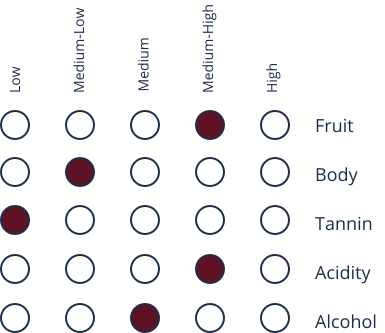

About
Prosecco is a versatile and well-balanced sparkling wine wine that originated in the town Prosecco just outside of Trieste. It has a similar taste to champagne, however the grapes and brewing methods are quite different. Prosecco comes in a variety of sweetness levels; dry with 17-32g sugar/ L, extra dry with 12-17g sugar/L, and brut with up to 12g sugar/L. Prosecco also holds both DOC and DOCG recognitions for sparkling, semi-sparkling, and flat prosecco. A fun fact about prosecco is that it is typically lower in calories than most wines with approximately 80 calories per glass.
Taste Profile
Prosecco
“pruh-seh-co”
Dominant Flavors

Green Apple
Honeydew
Cream
Pear
Grapes
- Glera:
are floral and fruity. 85% of this grape variety is required to be used in the production in order to be recognized as a true prosecco. - Bianchetta, Verdiso, and Perera:
are native grapes that can contribute to up to 15% of Prosecco volume.
Pairings
- Seafood:
lobster, crab leg, shrimp, caviar, smoked salmon, and oysters - Pasta & Risotto:
any pasta or risotto with cream or mushroom sauce - Cheese:
brie, camembert, baby swiss, gouda, edam, parmigiano reggiano, and asiago - Other:
almonds, cured meats, focaccia, and sushi
Serving

3℃- 7℃
Tulip Glass
Regions
Veneto